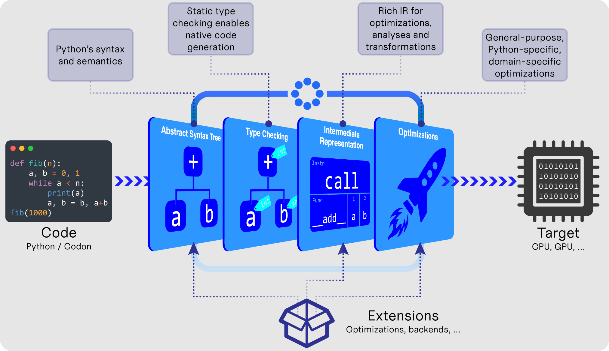

What is Codon?
Codon is a high-performance Python implementation that compiles to native machine code without any runtime overhead. Typical speedups over vanilla Python are on the order of 10-100x or more, on a single thread. Codon's performance is typically on par with (and sometimes better than) that of C/C++. Unlike Python, Codon supports native multithreading, which can lead to speedups many times higher still.
Think of Codon as Python reimagined for static, ahead-of-time compilation, built from the ground up with best possible performance in mind.
Goals
- üí° No learning curve: Be as close to CPython as possible in terms of syntax, semantics and libraries
- üöÄ Top-notch performance: At least on par with low-level languages like C, C++ or Rust
- üíª Hardware support: Full, seamless support for multicore programming, multithreading (no GIL!), GPU and more
- üìà Optimizations: Comprehensive optimization framework that can target high-level Python constructs and libraries
- üîã Interoperability: Full interoperability with Python's ecosystem of packages and libraries
Non-goals
-
❌ Drop-in replacement for CPython: Codon is not a drop-in replacement for CPython. There are some aspects of Python that are not suitable for static compilation — we don't support these in Codon. There are ways to use Codon in larger Python codebases via its JIT decorator or Python extension backend. Codon also supports calling any Python module via its Python interoperability. See also "Differences with Python" in the docs.
-
❌ New syntax and language constructs: We try to avoid adding new syntax, keywords or other language features as much as possible. While Codon does add some new syntax in a couple places (e.g. to express parallelism), we try to make it as familiar and intuitive as possible.
How it works

Quick start
Download and install Codon with this command:
/bin/bash -c "$(curl -fsSL https://exaloop.io/install.sh)"
After following the prompts, the codon command will be available to use. For example:
- To run a program:
codon run file.py - To run a program with optimizations enabled:
codon run -release file.py - To compile to an executable:
codon build -release file.py - To generate LLVM IR:
codon build -release -llvm file.py
Many more options are available and described in the docs.
Examples
Basics
Codon supports much of Python, and many Python programs will work with few if any modifications.
Here's a simple script fib.py that computes the 40th Fibonacci number...
from time import time
def fib(n):
return n if n < 2 else fib(n - 1) + fib(n - 2)
t0 = time()
ans = fib(40)
t1 = time()
print(f'Computed fib(40) = {ans} in {t1 - t0} seconds.')
... run through Python and Codon:
$ python3 fib.py
Computed fib(40) = 102334155 in 17.979357957839966 seconds.
$ codon run -release fib.py
Computed fib(40) = 102334155 in 0.275645 seconds.
Using Python libraries
You can import and use any Python package from Codon via from python import. For example:
from python import matplotlib.pyplot as plt
data = [x**2 for x in range(10)]
plt.plot(data)
plt.show()
(Just remember to set the CODON_PYTHON environment variable to the CPython shared library,
as explained in the the Python interoperability docs.)
Parallelism
Codon supports native multithreading via OpenMP. The @par annotation
in the code below tells the compiler to parallelize the following for-loop, in this case using
a dynamic schedule, chunk size of 100, and 16 threads.
from sys import argv
def is_prime(n):
factors = 0
for i in range(2, n):
if n % i == 0:
factors += 1
return factors == 0
limit = int(argv[1])
total = 0
@par(schedule='dynamic', chunk_size=100, num_threads=16)
for i in range(2, limit):
if is_prime(i):
total += 1
print(total)
Note that Codon automatically turns the total += 1 statement in the loop body into an atomic
reduction to avoid race conditions. Learn more in the multithreading docs.
Codon also supports writing and executing GPU kernels. Here's an example that computes the Mandelbrot set:
import gpu
MAX = 1000 # maximum Mandelbrot iterations
N = 4096 # width and height of image
pixels = [0 for _ in range(N * N)]
def scale(x, a, b):
return a + (x/N)*(b - a)
@gpu.kernel
def mandelbrot(pixels):
idx = (gpu.block.x * gpu.block.dim.x) + gpu.thread.x
i, j = divmod(idx, N)
c = complex(scale(j, -2.00, 0.47), scale(i, -1.12, 1.12))
z = 0j
iteration = 0
while abs(z) <= 2 and iteration < MAX:
z = z**2 + c
iteration += 1
pixels[idx] = int(255 * iteration/MAX)
mandelbrot(pixels, grid=(N*N)//1024, block=1024)
GPU programming can also be done using the @par syntax with @par(gpu=True). See the
GPU programming docs for more details.
NumPy support
Codon includes a feature-complete, fully-compiled native NumPy implementation. It uses the same API as NumPy, but re-implements everything in Codon itself, allowing for a range of optimizations and performance improvements.
Here's an example NumPy program that approximates pi using random numbers...
import time
import numpy as np
rng = np.random.default_rng(seed=0)
x = rng.random(500_000_000)
y = rng.random(500_000_000)
t0 = time.time()
# pi ~= 4 x (fraction of points in circle)
pi = ((x-1)**2 + (y-1)**2 < 1).sum() * (4 / len(x))
t1 = time.time()
print(f'Computed pi~={pi:.4f} in {t1 - t0:.2f} sec')
... run through Python and Codon:
$ python3 pi.py
Computed pi~=3.1417 in 2.25 sec
$ codon run -release pi.py
Computed pi~=3.1417 in 0.43 sec
Codon can speed up NumPy code through general-purpose and NumPy-specific compiler optimizations, including inlining, fusion, memory allocation elision and more. Furthermore, Codon's NumPy implementation works with its multithreading and GPU capabilities, and can even integrate with PyTorch. Learn more in the Codon-NumPy docs.